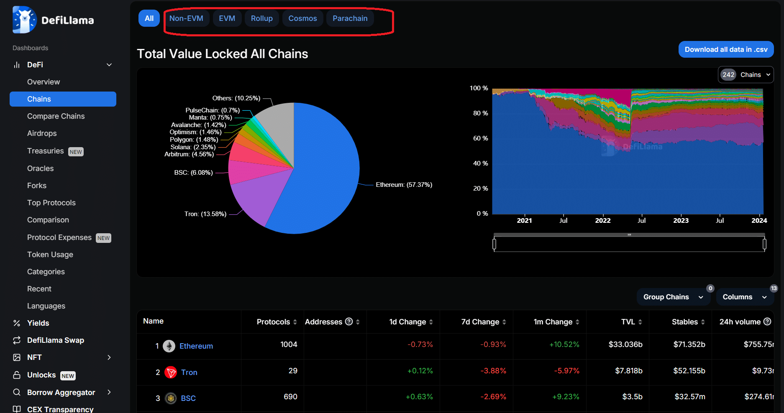

Llama Trekking: A Deep Dive (Sort Of) into Swap Defi Llama's Governance and Tokenomics
Okay, so picture this: You're hiking in the Andes, right? Beautiful scenery, crisp mountain air… and suddenly, you stumble upon a herd of llamas, each wearing a tiny, personalized DeFi yield farming vest. Slightly surreal, I know. But that's kind of how I feel sometimes trying to navigate the world of decentralized finance. It's breathtakingly innovative, sometimes frustratingly opaque, and always a little bit… llama-esque.
That brings me to Swap Llama, a site I, like many others, rely on for tracking DeFi protocols. It's become a kind of oracle, a trusted source of information in a wild, wild west. But what about its governance and tokenomics? That’s the real llama-trekking part.
At first glance, the tokenomics seem straightforward enough: $LLAMA. Nice and catchy, like a band name. The idea is that holding $LLAMA gives you voting rights in the protocol’s future. You get to influence things, steer the ship (or llama caravan, if we’re sticking to the metaphor), and hopefully, see the value of your tokens grow. Sounds idyllic, doesn't it?
However, the devil, as they say, is in the details. And those details can get… hairy. (Sorry, couldn’t resist another llama pun.) How much influence does holding $LLAMA actually give you? Is there a risk of centralization, even in this decentralized world? These aren't easily answered questions.

I’ve spent some time poring over the whitepaper (yes, I know, riveting stuff), and I’m still grappling with some of the nuances. For example, the token distribution seems reasonable on paper, but how will it play out in reality? Will we see a concentrated ownership amongst early adopters, potentially undermining the democratic ideals of decentralized governance? It’s a valid concern, and it highlights a larger issue in the crypto space – the tension between early contributors and the broader community.
One thing that strikes me as particularly interesting is the emphasis on community feedback. DefiLlama, unlike some other projects, seems genuinely committed to listening to its users. This is crucial, isn't it? After all, it’s the community that ultimately gives value to the project. But even this comes with its own set of challenges. How do you effectively manage and incorporate feedback from a diverse, often vocal, global community? It’s a logistical feat worthy of scaling Mount Everest on a llama.
Honestly, fully understanding the intricacies of DefiLlama’s governance is probably beyond my capabilities – or maybe even anyone's at this point. It’s a constantly evolving system, and predicting the long-term effects of its tokenomics is like trying to predict the weather in the Andes – almost impossible.
So, where does that leave us? Well, my Andean llama-trekking expedition into DefiLlama’s governance and tokenomics has been, shall we say, insightful. I haven't come away with all the answers, but I've definitely gained a deeper appreciation for the complexities of DeFi governance. It's a world full of potential, brimming with innovation… and yes, even a few llamas.
And that’s the thing, isn’t it? This journey, this exploration, isn't about having all the answers. It's about the process of questioning, of digging deeper, of engaging with this fascinating and ever-changing landscape. It’s about embracing the slightly chaotic, slightly surreal beauty of the DeFi wilderness – llama vests and all.
Defi Llama's Upgrade: It's Not Just About Llamas, People!
Remember that time I tried to build a Lego castle only to realize I was missing a crucial, tiny brick? That tiny brick was the keystone, the whole thing wobbled, and my meticulously planned moat became a sad puddle of disappointment. That’s kinda how I felt looking at some of the early community proposals for Defi Llama’s upgrades. Not a complete disaster, mind you, but definitely some…wobble.
Defi Llama, for the uninitiated (and frankly, you're missing out!), is this amazing aggregator for decentralized finance. It’s like a beautifully organized, constantly updating spreadsheet showing you all the juicy DeFi action happening across various chains. It's incredibly useful, but like any complex system, it needs constant tweaking and improvement. That’s where the community proposals come in.
And oh boy, the proposals. Some were brilliant, genuinely insightful suggestions that could catapult Defi Llama into the stratosphere. Think "adding support for a new, promising DeFi protocol" brilliant. Others? Well, let’s just say they felt like someone had thrown a dart at a whiteboard covered in feature requests. I’m not naming names, but the suggestion to add a built-in llama-themed fortune cookie generator…let’s just say it didn't quite hit the mark. (Though, I admit, the idea did have a certain quirky charm).
What struck me most about this process, though, was the sheer diversity of perspectives. You’ve got seasoned developers suggesting complex code changes, seasoned DeFi users pushing for better analytics and more intuitive interfaces, and then…well, the llama fortune cookie folks. The sheer spectrum of ideas, the different levels of technical expertise— it's fascinating. It’s a microcosm of the DeFi community itself: vibrant, chaotic, sometimes a little…unhinged, but ultimately driven by a shared desire to improve the space.
The discussions surrounding these proposals were equally compelling. Seeing developers patiently explain complex technical issues to less technically inclined users, witnessing the respectful (mostly!) debate between differing viewpoints—it was a masterclass in collaborative development. It wasn’t always pretty, there were arguments and disagreements, moments where I wanted to yell, "Just ship it already!" But that's the beauty of it, isn't it? The messy, human element of building something truly collaborative.
This whole experience has changed my perspective on community-driven development. It's not always efficient, it's not always pretty, but it fosters a sense of ownership and responsibility that's hard to replicate. You get this unique blend of passionate expertise and fresh, often unexpected, perspectives. The Lego castle may have had a few wonky turrets (thank you, wayward dart thrower!), but it ultimately stood, stronger, I think, because of the diverse hands that built it.
So, what’s my takeaway from this journey through the world of Defi Llama proposals? It’s this: Community-driven upgrades are messy, chaotic, sometimes frustrating, but ultimately rewarding. It’s about embracing the imperfections, celebrating the diversity, and acknowledging that building something truly great takes more than just brilliant code; it takes a community, a whole flock of llamas, if you will, all pulling in the same, albeit occasionally wobbly, direction. And maybe, just maybe, a surprisingly well-received llama fortune cookie generator. You never know.
The Llama's Long Shadow: Musing on Decentralized Governance and DeFi Llama
Okay, so picture this: I’m scrolling through DeFi Llama – that magnificent, slightly overwhelming dashboard of all things decentralized finance – and I’m struck, again, by the sheer variety of governance models. It’s like walking into a bizarre international convention where each booth is a different planet, each with its own peculiar system of power. Some are democracies, some are oligarchies, and some… well, some are still figuring it all out. It’s messy, it’s chaotic, and frankly, it’s kind of beautiful.
My initial reaction, like many others probably, was, “Wow, this is complex.” And it is complex. Trying to wrap your head around tokenomics, voting mechanisms, and the nuances of on-chain governance can feel like trying to solve a Rubik's Cube blindfolded while riding a unicycle. But the more I dig, the more fascinating it becomes. DeFi Llama, in its wonderfully comprehensive way, gives us a bird's-eye view of this evolving landscape.
The thing is, we're still in the very early days of decentralized governance. Think of it like the Wild West – lots of promise, lots of potential, but also a fair bit of lawlessness (or, at least, a lack of established legal frameworks). You have projects using DAO (Decentralized Autonomous Organization) structures, where token holders vote on proposals. Some DAOs are impressively sophisticated, with elaborate systems of checks and balances; others feel… less so. I’ve seen DAOs where a small group of whales effectively controls everything, essentially negating the whole "decentralized" aspect. Isn't that ironic?
Then there are projects experimenting with quadratic voting, where the influence of a single voter diminishes as their voting power increases. The idea is to prevent large holders from dominating the decision-making process. It's a noble goal, but is it really working in practice? I’m still not entirely convinced. There are so many variables at play – the composition of token holders, the nature of the proposals, the overall health of the project – that it’s hard to definitively say which governance model is "best."
And this is where DeFi Llama shines. It allows us to observe these different models in action, to see their strengths and weaknesses in real-time. It's not just a data aggregator; it’s a window into a fascinating social experiment, a constantly shifting ecosystem where the rules are still being written. It’s a bit like watching a colony of ants build a complex network – you see the individual components, but the overall structure is emergent, unpredictable, and incredibly interesting.
My initial skepticism – that overwhelming sense of complexity – hasn't entirely vanished. Honestly, some of these governance systems are still baffling. But the beauty lies in the experimentation, the constant iteration, the very real possibility that we're building something truly transformative. Maybe we won't get it perfectly right at first, and maybe we'll stumble and fall along the way – but the journey itself, as observed through the lens of DeFi Llama, is worth watching.
So, I started out with a simple question about decentralized governance. Instead of a clear-cut answer, I’ve ended up with a deeper appreciation for the inherent complexities and the inherent beauty of this emerging space. It’s not just about algorithms and code; it's about people, their motivations, and their collective attempt to build a new form of collaborative decision-making. And that, my friends, is a story far more interesting than any simple summary could ever encompass.
The Unsung Heroes of Defi Llama: Why We Need to Reward Data, Not Just Dollars
Okay, confession time. I’m a sucker for spreadsheets. I know, I know, it’s not exactly a thrilling admission. But there’s something deeply satisfying about a well-organized spreadsheet, rows neatly aligned, data whispering secrets. This nerdy fondness recently led me down a rabbit hole of Defi Llama, and it got me thinking: who are the people keeping this amazing resource alive, and are we really giving them enough appreciation?
Defi Llama, for the uninitiated, is basically the Wikipedia of the decentralized finance world. It's a crucial hub aggregating data from various DeFi protocols, giving us a real-time glimpse into the chaotic, exciting, and sometimes utterly baffling world of crypto. We all use it – checking TVL, comparing yields, maybe even bragging about our gains (or losses, let’s be honest, we’ve all been there). But have you ever stopped to think about the sheer volume of data that goes into keeping this beast fed? It’s not magic, folks. It’s meticulously gathered information, painstakingly verified (hopefully!), and constantly updated.
So, who are the unsung heroes keeping the data flowing? Partially, it’s the Llama team itself, obviously working tirelessly behind the scenes. But also, it’s the community – the developers, the users, everyone contributing snippets of information, helping to keep the whole thing accurate and up-to-date. Now, here’s where things get interesting. While Defi Llama benefits enormously from this collective effort, the reward system feels… lopsided, doesn’t it?
We celebrate the protocols, the innovations, the astronomical (and sometimes meteoric) price swings. We build communities around projects, fueled by the promise of returns. But the silent architects who make sense of all that – the data contributors? They often seem to operate in the shadows, rewarded mainly with a pat on the back (and maybe a slightly inflated ego). I mean, is a virtual badge of honour really enough compensation for painstaking data entry? I'm not sure.
And this isn't just some philosophical musing about fairness. It's about sustainability. If we don't create incentives to maintain the quality and quantity of data flowing into Defi Llama, the whole system could suffer. Imagine a slowly decaying Wikipedia, riddled with inaccuracies and outdated information. That's a pretty scary prospect for anyone serious about understanding the DeFi space.
Of course, designing a proper reward system is easier said than done. How do you fairly compensate for contributions that vary so wildly in scale and complexity? Tokenized rewards? A tiered system based on accuracy and contribution volume? Maybe even a combination of both? This is where I start to feel overwhelmed. My spreadsheet-loving brain is working overtime, but I'm struggling to come up with the perfect solution. It might even need a meta spreadsheet to track all the options.
My journey of thought hasn't led to a neat, perfectly-formed conclusion. There’s no magic bullet, no single solution that instantly solves the problem of rewarding data contributors to Defi Llama. But it has made me acutely aware of the often-overlooked human element in this rapidly expanding technological landscape. This isn’t just about numbers and algorithms; it’s about people – people dedicating their time and expertise to build a valuable resource for the community. And that, I think, deserves a lot more recognition than it currently gets. The next time you use Defi Llama, take a moment to appreciate the invisible hands keeping it running. They deserve our gratitude, not just our data.
DeFi Llama's Dirty Little Secret: Funding Your Protocol's Wild West Dreams
Okay, so picture this: it’s 2017, I’m staring at a spreadsheet filled with more zeros than I’ve ever seen in my life (and trust me, I’ve seen a lot of spreadsheets). I’m trying to convince VCs to invest in my – let’s be kind – ambitious blockchain project. It felt like trying to sell ice to Eskimos, only the Eskimos were wearing suits and sipping expensive coffee. Fast forward to today, and while the suits are still there, the game has changed. Now, we have DeFi Llama, and suddenly, the ice-selling pitch feels… possible.
DeFi Llama, for the uninitiated, is basically a Google Analytics for decentralized finance. It's a treasure trove of data – TVL (Total Value Locked), volume, number of users – essentially everything a budding DeFi protocol needs to shout from the rooftops (or, you know, whisper to a VC). It's become the go-to resource for assessing the viability of a DeFi project. But here's the thing: using DeFi Llama for funding isn't just about crunching numbers; it's about telling a compelling story.
Think about it. A sky-high TVL isn't just a number; it's a testament to user trust, a beacon shining bright in the often-murky waters of the crypto world. It’s the equivalent of showing a potential investor your packed concert venue, not just a brochure with projected attendance. And while sheer volume is impressive, it's not the whole picture. A steady, growing TVL, maybe accompanied by a healthy number of active users – that speaks volumes. It suggests a sustainable ecosystem, not just a flash-in-the-pan hype train.
But here’s where things get a little messy. DeFi Llama doesn’t tell the whole story. Are those users genuinely engaged, or are they bots? Is that TVL propped up by dubious practices? This is where the art of presenting your data comes in. You need to be more than just a data cruncher; you need to be a storyteller. You need to explain the why behind the numbers – the innovation, the community engagement, the unique value proposition.
And honestly? Sometimes, the numbers can be… intimidating. I’ve seen protocols with astronomical TVLs that have ultimately imploded. It’s a reminder that data, while crucial, is never the whole truth. It’s a piece of the puzzle, a starting point for a deeper conversation. You need to demonstrate a keen understanding of the competitive landscape, the potential risks, and the mitigating strategies you’ve put in place. It's not enough to just have the data; you need to interpret it and use it to weave a convincing narrative.
This isn't a foolproof system, of course. The crypto world is still the Wild West. You can have the best data in the world, a killer presentation, and still get rejected. Venture capital is a fickle mistress, prone to sudden changes in mood. But DeFi Llama, despite its imperfections, provides a crucial framework for understanding the market and demonstrating your project's potential. It’s a tool, a powerful one, but ultimately, it’s the story you tell, the passion you demonstrate, and the vision you share that will make or break your funding round.
So, back to my 2017 self staring at that spreadsheet… I wish I’d had DeFi Llama then. It wouldn't have guaranteed success, but it certainly would have given me a much better starting point. And maybe, just maybe, those Eskimos in suits would have been a little less… frosty. The journey, it turns out, is as much about the storytelling as the data itself. And that’s a lesson that applies far beyond the world of DeFi.
DefiLlama's Dance: Swapping Data for… What Exactly?
Okay, confession time. I’m not a DeFi wizard. I’m more of a “cautiously optimistic crypto curious” kind of person. So when I started digging into DefiLlama, this seemingly all-knowing aggregator of decentralized finance data, I felt a bit like Dorothy in Oz – surrounded by swirling numbers and wondering, "What’s going on here?" And more importantly, what’s the deal with their native token, $LLAMA?
DefiLlama’s core function is pretty straightforward: it collates data from various DeFi protocols, giving you a bird's-eye view of total value locked (TVL), interest rates, and other vital stats. It’s like having a Bloomberg terminal, but for the wild, wild west of decentralized finance. Incredibly useful, right? Absolutely. But the utility of its native token? That's where things get… fuzzier.
Initially, the idea of a token incentivizing data aggregation seemed…odd. I mean, isn't good data its own reward? Isn’t the value proposition of a service like DefiLlama inherent in its usefulness? It’s like paying extra for a really accurate weather app – why bother? The information is valuable enough on its own, no?
Yet, there’s a growing trend in the crypto world to tokenize everything. Perhaps it's the allure of “community ownership” – a buzzword that, let’s be honest, can sometimes feel a bit hollow. Or maybe it’s just the inherent appeal of attaching a price tag to something that, arguably, already holds value.
So, what does the $LLAMA token offer beyond the warm fuzzy feeling of contributing to the DefiLlama ecosystem? Well, it grants access to certain features, like boosted API access (for those building on top of DefiLlama's data), and it’s occasionally used in governance proposals. But honestly, the actual utility feels… somewhat limited, at least for your average DeFi enthusiast like myself.
This is where I start to wrestle with my own biases. Am I just resistant to change? Am I too cynical? Perhaps the future of DeFi is inextricably linked to tokenized everything, and I’m just too stuck in my old-fashioned ways. Maybe $LLAMA will become a cornerstone of the DeFi data infrastructure, a vital cog in the machine. I wouldn’t bet my house on it, but hey, stranger things have happened in crypto.
It’s also worth considering the potential for future utility. DefiLlama could expand its services, creating new use cases for $LLAMA that we haven't even envisioned yet. This is, after all, the nature of a rapidly evolving space.
My initial skepticism about the need for a token in the DefiLlama ecosystem hasn’t completely vanished. But my journey of exploration has led me to a more nuanced understanding. It’s not necessarily about whether a token is necessary, but rather whether its existence adds genuine value beyond the core product itself. And that, my friends, remains the million-dollar (or perhaps, million-llama) question.
This isn't a definitive answer; it's more a reflection of my personal journey of trying to understand the interplay between data aggregation, DeFi, and token utility. The landscape is shifting constantly, and only time will tell whether $LLAMA’s dance proves to be a graceful waltz or a clumsy stumble. But one thing’s for sure: the journey itself has been a fascinating one.
Voting with Your Crypto: Could On-Chain Voting Save DeFi Llama (and Maybe Us All)?
Remember that time I tried to vote in my local council election? Lines snaked around the block, the ballot papers felt suspiciously flimsy, and the whole process felt… well, about as thrilling as watching paint dry. Now, imagine that same clunky system, but instead of local politics, you're deciding the future of your decentralized finance (DeFi) investments. Sounds bleak, right? That’s why the idea of on-chain voting mechanisms integrated into platforms like Swap Llama has me genuinely excited, even if I have some serious reservations.
DeFi Llama, for those blissfully unaware, is essentially the ultimate price-comparison website for decentralized finance. It's your go-to source for checking the pulse of the DeFi ecosystem, seeing which protocols are booming and which are… well, less so. But it’s currently governed through a relatively opaque process. Wouldn't it be amazing if, instead of relying on a small group of individuals, the community could directly shape the direction of this critical information hub? That's where the beauty – and, let's be honest, the terrifying complexity – of on-chain voting comes in.
On-chain voting means your votes are recorded directly on the blockchain, making the process transparent, auditable, and (ideally) tamper-proof. No more mysterious backroom deals, no more accusations of manipulation. Just a clear, immutable record of every single vote cast. Sounds utopian, doesn't it? Like something out of a science fiction novel where technology solves all our problems?
Well, hold your horses. It's not quite that simple. For starters, the technical hurdles are significant. Building a secure, user-friendly on-chain voting system that can handle the potential volume of votes on a platform like DeFi Llama is a monumental task. And then there's the question of participation. Will the average DeFi user even want to participate in governance? Getting people to vote, even for something they care about, is notoriously difficult. We've seen it in real-world elections, and I suspect it'd be similar here. It’s the digital equivalent of convincing your friends to actually read the terms and conditions before clicking "I agree."
There's also the issue of manipulation, even with on-chain voting. Sybil attacks – where a single actor creates multiple fake identities to inflate their voting power – are a constant threat. The blockchain’s immutability doesn’t automatically solve the problem of malicious actors; it just makes their actions more visible. And let’s not even get started on the potential for exploits, which are, sadly, a hallmark of the blockchain world. It’s a bit like building a super-secure vault, only to find out someone has a master key hidden in the gardener's shed.
But despite all these potential pitfalls, I'm still bullish on the idea. The inherent transparency of on-chain voting, the potential for increased community engagement, and the possibility of fostering a more democratic and accountable DeFi ecosystem are too alluring to ignore. It's a gamble, sure, but it's a gamble I think is worth taking. Think of it as investing in the future of DeFi – a future where our collective voices, amplified by the power of the blockchain, can actually make a difference.
Maybe the clunky local election process isn't so bad after all. At least it's familiar. Implementing on-chain voting in DeFi is a leap into the unknown, a bet on the transformative power of technology, and a potential remedy to some of DeFi’s shortcomings. But isn’t that what makes it exciting? The journey itself, with all its imperfections and uncertainties, is what truly matters. And if, along the way, we can make DeFi Llama a more responsive, community-driven platform, then that’s a win worth fighting for.
Chasing Unicorns and Finding Data: My Defi Llama Obsession (and What I Learned)
Okay, confession time. I’ve spent more time than I care to admit staring at DefiLlama lately. It’s not glamorous, I know. It’s not like binge-watching "The Bear" or finally tackling that sourdough starter I abandoned six months ago. But there’s something strangely captivating about those constantly updating numbers, those shimmering graphs charting the ebb and flow of decentralized finance. It feels like watching the stock ticker on Wall Street, but with way more… volatility. And way more questionable JPEGs.
My obsession started innocently enough. I was curious, naturally. How do these decentralized exchanges (DEXs) actually work? What are people actually doing with their crypto? Are we all just chasing the next Shiba Inu-level moon shot, or is there something more substantial happening beneath the surface? DefiLlama, with its comprehensive overview of various DeFi protocols, seemed like the perfect place to start digging.
What I found was… well, a mixed bag. On one hand, it’s incredible to see the sheer scale of innovation happening in DeFi. The total value locked (TVL) numbers, constantly fluctuating, are a testament to the evolving landscape. I can see, in real-time, how capital is flowing between different protocols, reflecting shifts in market sentiment, technological advancements, and—let’s be honest—pure speculation.
It’s like watching a massive, decentralized ant colony at work. Some ants (protocols) are thriving, building impressive structures (high TVL). Others are struggling, their nests (TVL) collapsing under the weight of competition or unforeseen circumstances. And some… well, some are just wandering aimlessly, probably lost on their way to a particularly appealing crumb of cryptocurrency.
But then the doubts creep in. Is TVL really the ultimate measure of success? Is a high TVL simply a reflection of a protocol’s ability to attract capital, or is it a genuine indicator of long-term value accrual? That’s the million-dollar question, isn’t it? And DefiLlama, while incredibly useful, doesn’t exactly answer that for you. It presents the data; it's up to us to interpret it.
And therein lies the challenge, and the intrigue. Analyzing DefiLlama data requires more than just glancing at pretty charts. You need to consider the underlying mechanisms of each protocol, its tokenomics, its community, and the broader market context. It's detective work, really, sifting through whitepapers and forum discussions, trying to discern genuine progress from fleeting hype.
I've learned to be more skeptical, for one. Those impressive TVL numbers can be misleading. A sudden surge might be a sign of genuine interest, but it could also be the result of a cleverly orchestrated marketing campaign or, even worse, a pump-and-dump scheme. It’s a wild west out there, folks.
This whole process, this deep dive into DefiLlama, has been a humbling experience. It’s shown me that the world of DeFi is far more complex than I initially imagined. It's not just about chasing quick profits; it's about understanding the underlying technologies, the economics, and the risks involved.
So, here I am, still staring at those numbers, still pondering the mysteries of long-term value accrual in DeFi. I haven't found all the answers—who has?— but the journey itself has been incredibly rewarding. I’ve learned to appreciate the nuanced complexities of this ecosystem, and I’ve gained a deeper understanding of the data itself. It’s not just about the numbers; it’s about the story they tell—a story that's constantly being written, one block at a time. And I, for one, am hooked. Now, if you’ll excuse me, I have some more unicorn-chasing to do.
The Great DeFi Fee Bake-Off: Wrangling Smart Contracts and My Sanity
Okay, so picture this: I'm knee-deep in spaghetti code, fueled by lukewarm coffee and the faint hope that I won't accidentally drain my own wallet (again). This isn't some rogue coding project born of a late-night caffeine-induced epiphany. No, this is the beautiful, frustrating, occasionally terrifying world of managing fee distribution through Swap Defi Llama smart contracts. Think of it as a highly technical, decentralized, and potentially lucrative bake-off, except the prize isn’t a blue ribbon, but… well, let’s just say it could be life-changing.
The initial allure was obvious. Decentralized finance (DeFi) promises transparency, efficiency, and – let’s be honest – the potential for some seriously juicy returns. Swap protocols, with their automated market makers (AMMs), seemed like the perfect playground for this. I envisioned a perfectly oiled machine, where fees flowed smoothly, fairly distributed amongst the stakeholders. A utopia of automated wealth redistribution, if you will.
Reality, as it often does, hit me like a rogue wave. Smart contracts, those elegant little bits of code, can be surprisingly… temperamental. It’s like trying to herd cats, except the cats are lines of code that can vanish into the ether at any moment, taking your hard-earned tokens with them. I’ve spent hours debugging, staring blankly at error messages that might as well be written in Klingon. There were moments, I admit, where I seriously contemplated a career change involving significantly less interaction with Solidity.
One of the biggest hurdles, besides the occasional existential dread, was actually understanding the different fee models. Linear? Exponential? What even is a constant product market maker, anyway? It felt like learning a new language, and a particularly arcane one at that. I spent far too much time wrestling with documentation that was, shall we say, less than user-friendly. Sometimes I felt like I was deciphering ancient hieroglyphs, rather than a piece of modern technology.
But amidst the chaos, there's a certain satisfaction. Slowly, painstakingly, I began to understand the intricacies of Swap Defi Llama's contract structure. The ability to precisely define and automate fee distribution for different parties – liquidity providers, developers, treasury – is incredibly powerful. It’s like having a miniature, programmable financial ecosystem at your fingertips. It's not just about the money, though that's certainly a significant motivator; it's about the potential to build something truly innovative and, dare I say, beautiful.
The journey has been far from linear. There have been setbacks, bugs, and moments of sheer frustration that made me want to throw my laptop out the window. (I didn't, mostly because my landlord would be rather unhappy.) Yet, through it all, there's been a sense of accomplishment – a feeling of having wrestled a powerful beast into submission, and managed to make it do my bidding (mostly).
So, where does that leave us? Well, I’m still learning. I’m still wrestling with those pesky smart contracts. But the journey itself has been valuable. It's taught me the importance of patience, perseverance, and a healthy dose of dark humor. And yes, I'm still slightly terrified of accidentally triggering a chain reaction that could unravel the fabric of the DeFi universe. But hey, at least I'm having a wild ride. Maybe we can all share some lukewarm coffee together at the next DeFi bake-off. Just don't tell my landlord.
The Unexpected Bloom: Ecosystem Grants and the Defi Llama's Surprising Power
Remember that time I tried to grow an avocado tree from a pit? I envisioned a lush, vibrant plant, a miniature rainforest in my tiny apartment. The reality? A pathetic little sprout that eventually succumbed to my less-than-green thumb. Building a DeFi ecosystem feels a bit like that sometimes – lots of hopeful planting, a dash of wishful thinking, and a hefty dose of unexpected challenges.
But here’s the thing: I wouldn’t have even had that pathetic sprout without the pit, right? And in the DeFi world, the "pits" – the foundational elements – are often nurtured and grown by ecosystem grants. And lately, I’ve been incredibly impressed by the role DefiLlama is playing in this process.
DefiLlama, for the uninitiated (though, seriously, are you living under a rock?), is that indispensable website where you can stalk – I mean, monitor – all the juicy DeFi data. TVL, token prices, you name it. It's the ultimate DeFi cheat sheet. But what I've found truly fascinating is how their influence extends far beyond just providing information. Their ecosystem grants program is quietly revolutionizing how projects grow and thrive.
Now, I'm not going to pretend I understood the intricacies of DeFi ecosystem grants when I first heard about them. It sounded like something out of a cyberpunk novel – lots of jargon, complex algorithms, and enough acronyms to make your head spin. But the core concept is beautifully simple: fund promising projects to build a stronger, healthier overall ecosystem. It's like investing in the future, but instead of stocks, it's decentralized applications and innovative solutions.
What makes DefiLlama's approach unique, in my opinion, is its focus on fostering genuine community growth. It’s not just about throwing money at the biggest names; it’s about identifying projects with real potential and nurturing their growth. It's a bit like a shrewd gardener, carefully tending to each sapling, providing the right nutrients, and pruning away the unnecessary branches.
And yet, even with this seemingly straightforward approach, there’s a certain element of unpredictable magic. You see, predicting the success of a DeFi project is a bit like predicting the weather in a chaotic thunderstorm – impossible to do with complete accuracy. Some projects, even with substantial funding, fizzle out. Others, against all odds, bloom into something spectacular. That’s the thrilling, and frankly, terrifying aspect of it all.
This isn't just about money, though. It's about fostering innovation, pushing the boundaries of what's possible within the decentralized finance space. It's about creating a sustainable ecosystem, one where projects support each other and work together toward a common goal. And that, my friends, is far more valuable than any single number on DefiLlama's dashboard.
So, back to my avocado pit. That little sprout might have failed, but the experience taught me a lot. It taught me patience, the importance of the right conditions, and the inherent unpredictability of growth. Watching DefiLlama's ecosystem grants program in action reinforces those lessons in a surprisingly relevant way. It's a reminder that building something substantial takes more than just funding; it takes nurturing, community, and a bit of that unpredictable, beautiful chaos. And while I might not be growing avocado trees successfully, I'm certainly enjoying watching the DeFi ecosystem flourish – one grant at a time.
The Unexpected Power of Llama-Fueled Altruism: How DeFi's Quirky Corner Is Building Real-World Change
Okay, so picture this: It's a rainy Tuesday. I'm staring blankly at my overflowing inbox, drowning in the usual crypto-noise – another pump and dump, another rug pull narrowly avoided. Honestly, I was starting to feel a little cynical. Was this whole decentralized finance thing just a glorified casino, a digital Wild West where the only winners were the already wealthy?
Then I stumbled upon Swap Defi Llama. Not exactly a catchy name, I'll admit. Sounds like something you’d find in a particularly strange zoo. But beneath that slightly goofy exterior lies a surprisingly powerful tool, and even more surprisingly, a burgeoning community leveraging it for genuinely good causes.
Defi Llama, for the uninitiated, is essentially a dashboard tracking various decentralized finance protocols. Think of it as a comprehensive scorecard for the DeFi universe. But what initially struck me wasn’t the data itself, but the vibrant, and often surprisingly altruistic, community that’s sprung up around it. I started seeing initiatives popping up, small at first, then growing in both ambition and impact.
One project I followed involved a community in Kenya using Llama to track the donations and transparency of a micro-loan program. Talk about real-world application! Imagine: leveraging blockchain’s inherent transparency to ensure accountability in a system historically plagued by corruption and inefficiency. It felt almost… poetic.
Another project, equally inspiring, was focused on supporting artists affected by the pandemic. Using smart contracts and DeFi Llama's tracking capabilities, they built a system for securely distributing funds and ensuring every donation went where it was intended. It wasn't a grand, multi-million dollar initiative, but the sheer ingenuity and collaborative spirit were breathtaking.
Now, I'm no DeFi guru. I still get confused by gas fees and slippage. I often find myself Googling terms I should probably already know. But what I've witnessed through these community-led projects on Defi Llama has been profoundly humbling. It’s a reminder that even within the often-cynical world of cryptocurrency, there's a powerful wellspring of human decency and collaborative potential.

This isn’t just about making money; it’s about building something better. It's about utilizing technology to address real-world problems, fostering transparency, and empowering communities often overlooked by traditional systems. It challenges the notion that DeFi is just a zero-sum game, constantly pitting individuals against each other in a desperate race to the top.
The irony, of course, isn't lost on me. We're using a tool originally designed for tracking financial data to track the progress of humanitarian efforts. It’s like using a microscope to study the stars—a brilliant repurposing of technology.
Initially, I started this article thinking I'd write a purely informative piece about Swap Llama’s use cases. But along the way, I found myself moved by the stories of ordinary people using this quirky tool to do extraordinary things. And that's perhaps the most valuable lesson here: sometimes the most unexpected places hold the most profound potential for positive change. The world needs less cynicism and more llamas (or at least, more Llama-powered initiatives). Now, if you'll excuse me, I have some gas fees to pay. And maybe, just maybe, a small donation to make.
tags: Decentralized Finance, DeFi, Governance, Tokenomics, Swap, DeFi Llama, Cryptocurrencies, Blockchain, Web3, Token Utility